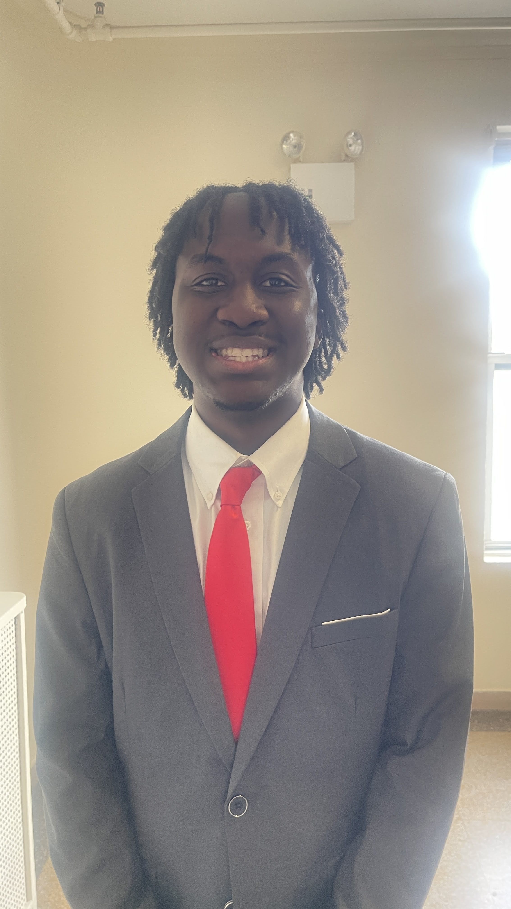

Introduction
Hi, I'm Gabriel Williams! Welcome to my personal website!
Biography
My name is Gabriel Williams, and I am from Baltimore, Maryland. I am currently a senior studying Computer Science at New Mexico State University. Alongside my academic pursuits, I am also involved in church outreach and lead a student organization. My hobbies include problem-solving with technology, working on personal projects, and barbering in my free time.
Phone Number
(575) 312-2219
gabecwilliams1@gmail.com
Github
@GabrielcWilliams